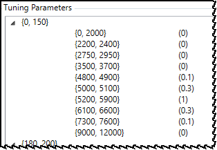
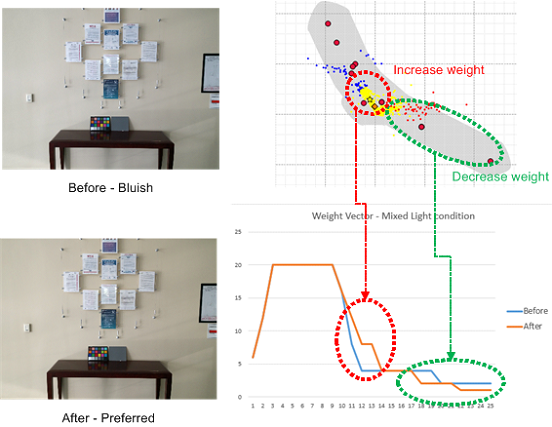
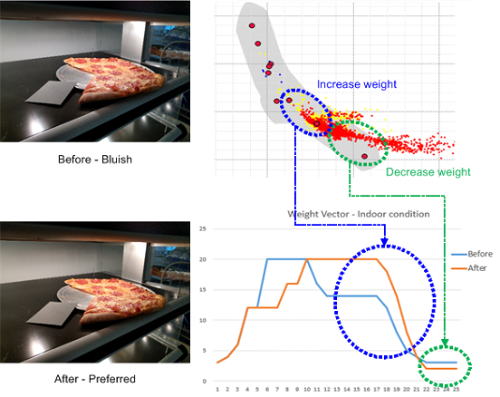
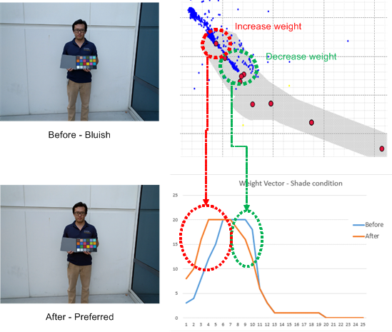

General procedure
Prerequisite: Before performing any fine-tuning, run
the AWB initial tuning procedure to generate initial parameter values.
Use the following steps to make updates to an illuminant weight vector.
Following the procedure are some examples of fine-tuning scenarios for illuminant
weight vectors.
- Open the project and click the AWB tab.
- In the List View tab,
click Illuminant Weight Vector to
show the existing weight vector configuration.

- To add a trigger region, highlight the row above or below
where you want to add the new trigger region, then click Add above or Add below to add a new row.
Note: The
tool does not allow adding a row above the minimum lux index or adding a
row below the maximum lux index.
- To update a trigger or weight value, double-click the
appropriate entry to open the edit dialog. Update the value and click
outside the box to save the change.
- Click .
Fine-tuning scenarios for illuminant weight vector
Figure : To improve a bluish issue with a yellowish wall in a mixed light
condition, change the weights as shown.

Figure : To make an image yellowish under A/H conditions, change the weights as
shown.

Figure : To make an image yellowish under a shade or dusk condition, change the
weights as shown.
